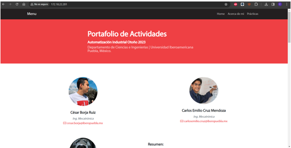
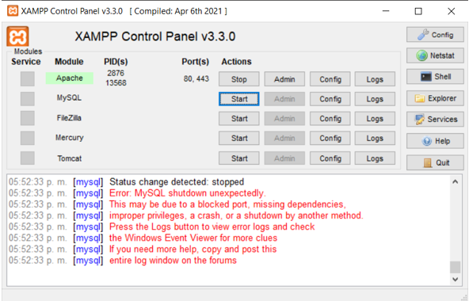
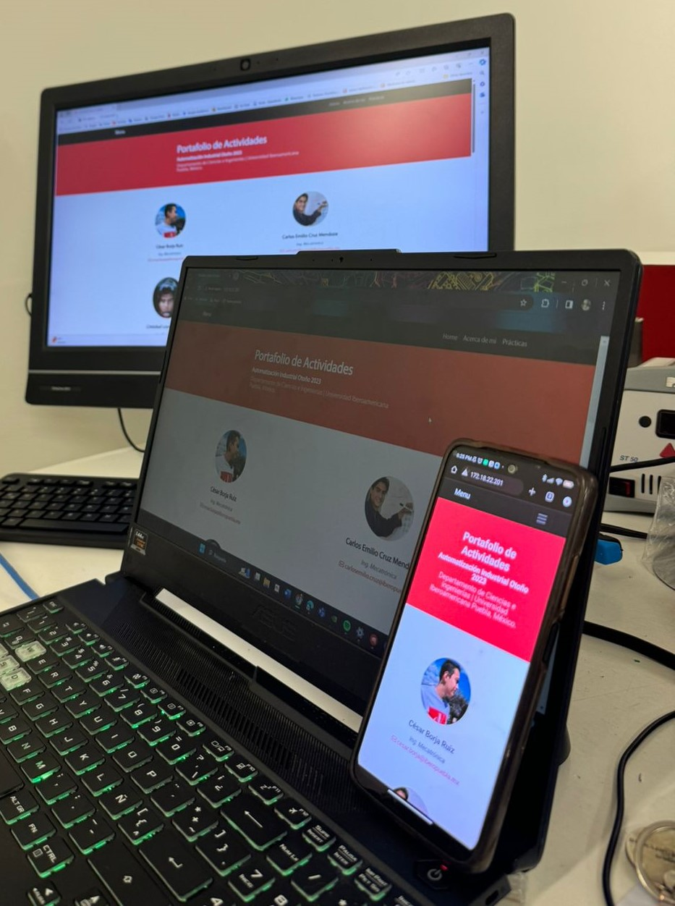
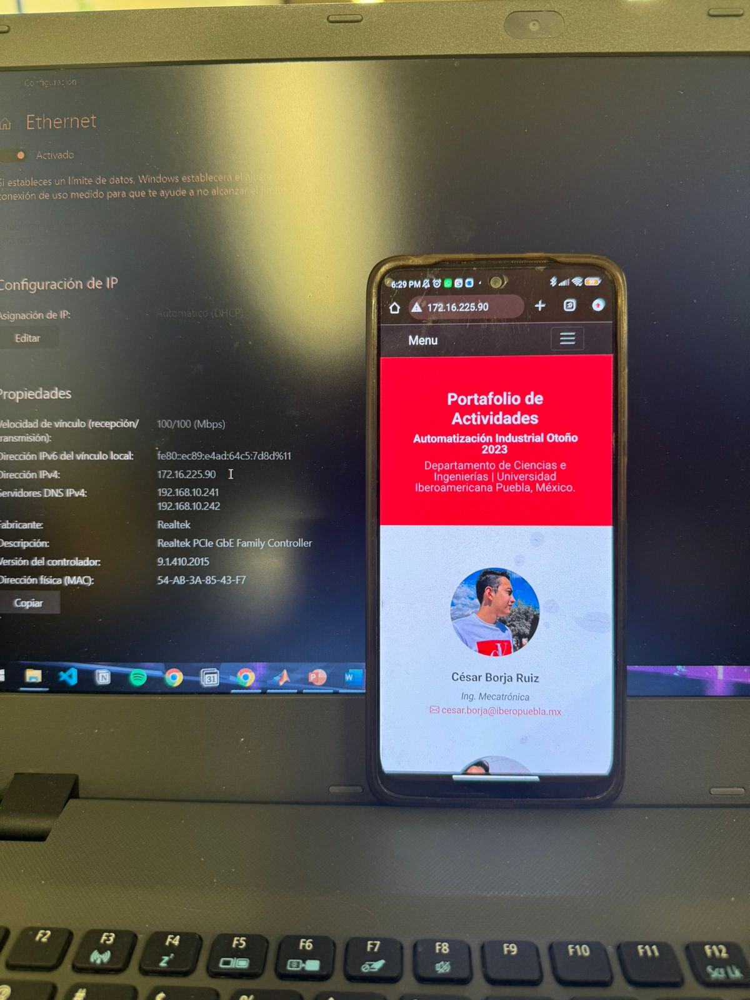
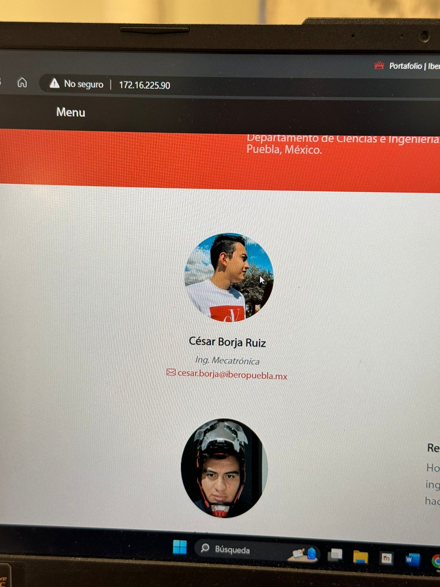
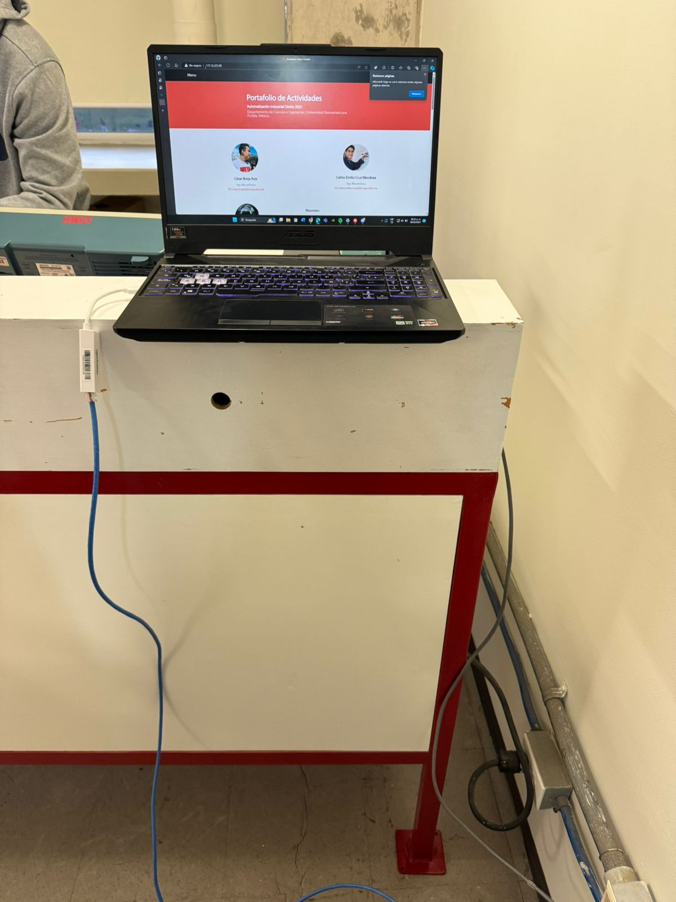
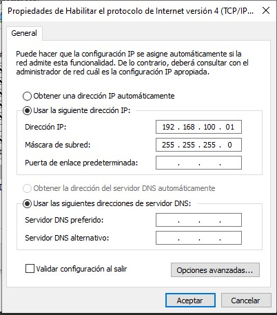
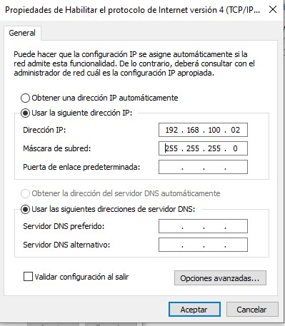
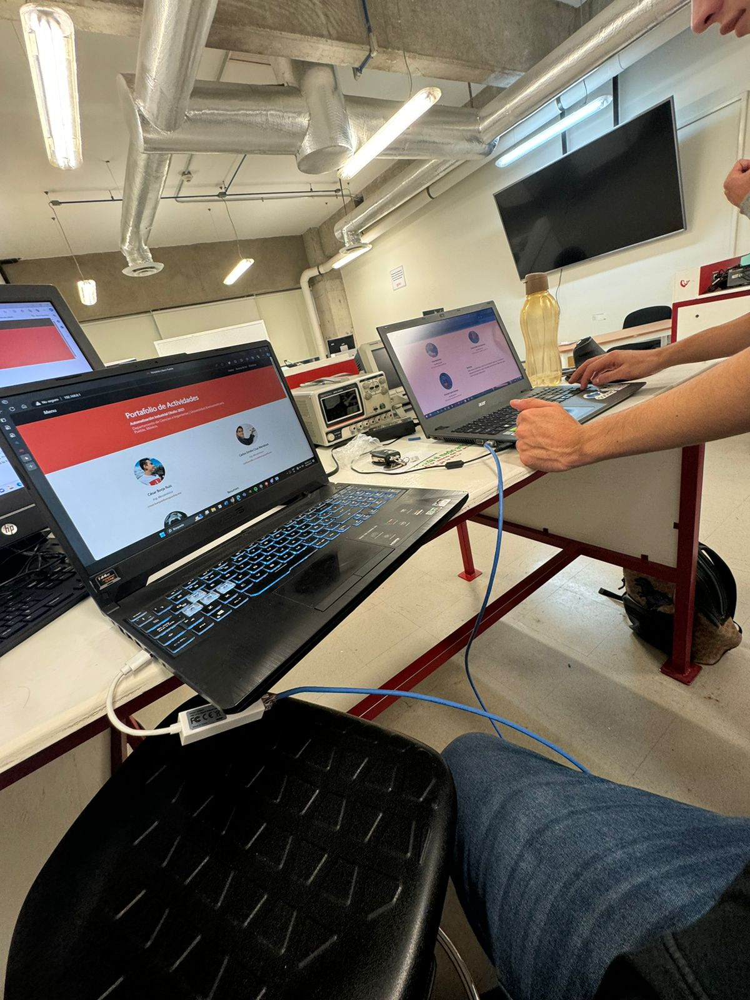

Una red local es la configuracion mas basica que podemos realizar con cables de red y conexiones inalambricas para comunicar dispositivos dentro de dicha red, enviar archivos, acceder a puertos y comunicarse entre si.
Por lo tanto en esta practica se hiceron varias configuraciones para que dispositivos en una red local puedan accesar a la misma informacion.
- Introducción -
Las redes locales (LAN, por sus siglas en inglés) son fundamentales en entornos tanto domésticos como empresariales, permitiendo la interconexión de dispositivos dentro de un área geográfica limitada. Estas redes son vitales para compartir recursos, como archivos, impresoras y conexiones a Internet, así como para facilitar la comunicación y la colaboración entre usuarios. En el diseño, implementación y mantenimiento de una LAN,
la selección adecuada de cables, protocolos y dispositivos de red es esencial para garantizar un rendimiento óptimo y una conectividad confiable.
En una red local, los cables de red, ya sean directos o cruzados, desempeñan un papel crucial en la conexión de dispositivos entre sí y con otros componentes de red, como switches, routers y puntos de acceso inalámbrico. Los cables directos se utilizan comúnmente para conectar dispositivos finales, como computadoras, impresoras y dispositivos de almacenamiento en red,
a un switch o a un router. Por otro lado, los cables cruzados son útiles para conectar dispositivos similares entre sí, como dos computadoras o dos switches.
- Materiales -
Cable de red directo
Cable de red cruzado
Varios dispositivos con conexion alambrica e inalambrica
- Desarrollo -
Objetivo General:
Conocer, investigar e identificar los pasos para configurar una red local y el acceso a recursos de un equipo en red.
Se llevaron a cabo las siguientes configuraciones en la computadora servidor mediante el programa Xammp
Comprueba el acceso al sitio web montado en el servidor local desde 3 dispositivos distintos (para acceder es necesario estar en la misma red).
Elabora un mapa de accesos de equipos y sus respectivas IPs en la Red de las computadoras de tus demás compañeros.
Repite los mismos pasos ahora utilizando el cable directo y conectándote a la red de la universidad cableada.
Repite los mismos pasos, pero ahora con el cable cruzado entre dos equipos, configurando la IP de ambos equipos a 192.168.0.1 (un equipo) y el 192.168.0.2 (el segundo equipo).
- Resultados -
Primera Parte



Al abrir el puerto 80 del dispositivo Host y escribir la IP se logro acceder exitosamente al contenido mediante 3 dispositivos diferentes.
Segunda parte



Al conectar la la computadora a la red de la universidad se obtuvo la IP de Ethernet para acceder a ella en 3 dispositivos distintos.
Tercera parte



Se utilizo el cable cruzado para comunicar 2 computadoras, se configuraron las IP respectivas en cada dispositivo y se logro acceder al contenido al escribir las IP.
- Conclusiones -
Se logro tener un primer acercamiento a los diferentes tipos de redes, siendo la local la mas sencilla y con la que interactuamos a menudo en nuestra vida cotidiana, tambien se comprobo directamente el funcionamiento de los cables de la practica pasada.
- Referencias -
- M. Reyes, Comunicaciones digitales, 1.ª ed. Universidad Autónoma Metropolitana, 2017. [En línea]. Disponible en: https://casadelibrosabiertos.uam.mx/gpd-comunicaciones-digitales.html